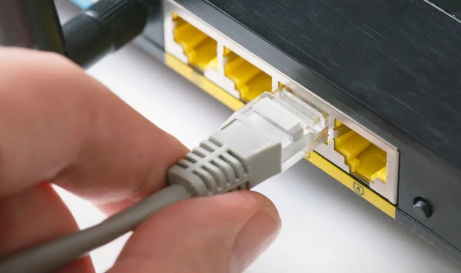

Ethernet é a tecnologia que permite a conexão física entre dispositivos como computadores, impressoras, switches e roteadores em redes locais. Por ser escalável e de fácil manutenção, esse padrão é amplamente usado para conectar dispositivos através de cabos para a transmissão de dados.
A intranet é uma rede de computadores semelhante à internet, mas de uso exclusivo de uma determinada organização. Por isso, somente os computadores daquela empresa podem acessá-la. Essa tecnologia facilita a comunicação, permitindo que os funcionários troquem informações de maneira mais rápida entre os departamentos.
Já a extranet pode ser entendida como uma extensão da intranet, ou seja, é a mesma rede usada na empresa que pode ser acessada pelas pessoas autorizadas de forma remota, a partir de outros locais.